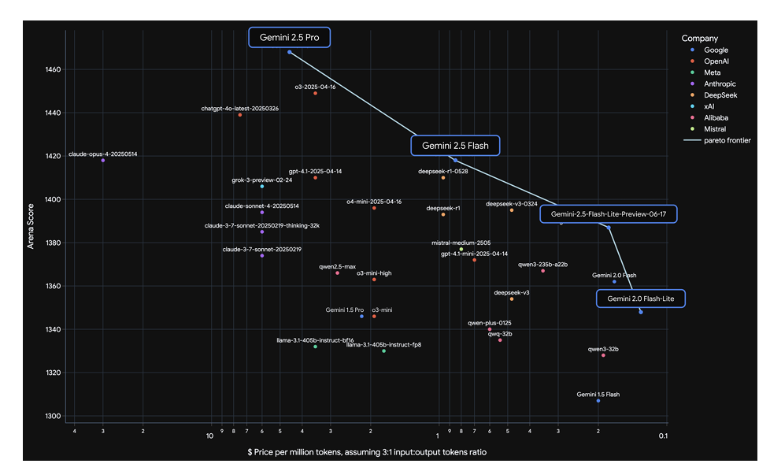
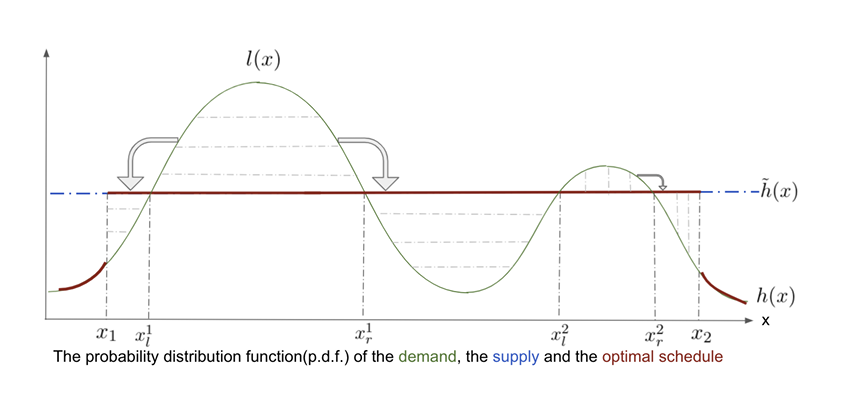
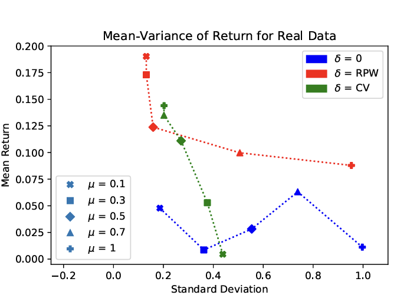
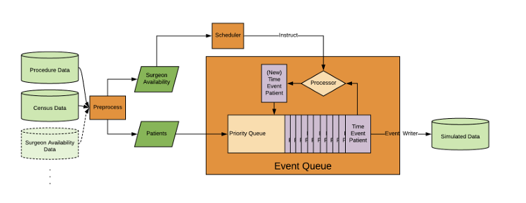
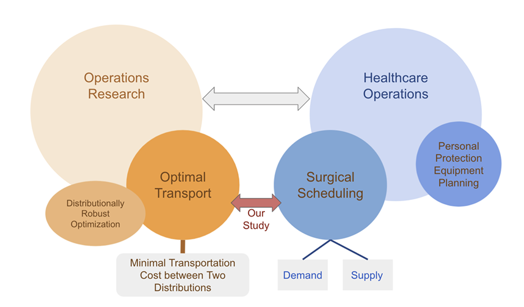
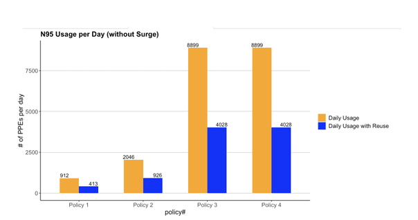
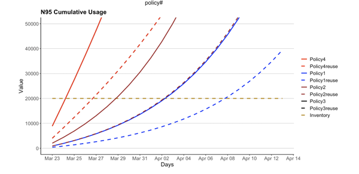

News
- [2026.05] Invited by Prof. Roberto V. Zicari to co-author a project on Trustworthy Generative AI Development and Use for ODBMS.org.
- [2026.03] Prompt Bank was awarded the 2025 DeepMind Data Science Breakthrough Award.
- [2025.07] Gemini 2.5: Core Contributor for Multimodal Long Context PDF understanding and first Google I/O contribution!
- [2025.07] Presented LLM Loss Analyzer demo at Google DataVerse Summit 2025.
- [2025.04] Presented Autorater Noise Predictor demo at Google Data Science Summit 2025.
- [2024.06] Grail went public on the NASDAQ.
- [2024.05] Graduated as a Fusion Fellow for the 2024 Venture Fellowship Program.
- [2020.04] The Wall Street Journal reported our work on the Stanford Hospital Resource Calculator during the pandemic.
- [2019.10] Won First Place at the 2019 Stanford Citadel Datathon, tackling real-world social challenges.
Experiences
Google, Core ML Data
Jan 2025 - Present
• Gemini Post-training: Improved Gemini's Flash performance on financial document Q&A from 54.42% (Gemini 2.0) to 66.50% (Gemini 2.5). The Pro performance has improved from 72.73% (Gemini 2.5) to 81.55% (Gemini 3.0).
• Frontier Safety: Conducted fine-tuning and APO experiments, achieving 0.969 recall for misuse detection pipelines. Developed an agentic approach for long-term user trajectory analysis for cyber attack detection.
• Automated Tooling: Architected an end-to-end Automated Loss Pattern Analysis Tool used across Google teams, onboarded factuality and reasoning eval to Prompt Bank, and developed an agentic approach for benchmark generation for post train eval refactor.
• Frontier Safety: Conducted fine-tuning and APO experiments, achieving 0.969 recall for misuse detection pipelines. Developed an agentic approach for long-term user trajectory analysis for cyber attack detection.
• Automated Tooling: Architected an end-to-end Automated Loss Pattern Analysis Tool used across Google teams, onboarded factuality and reasoning eval to Prompt Bank, and developed an agentic approach for benchmark generation for post train eval refactor.
Grail, LLC
Dec 2022 - Oct 2024
• Cancer Detection: Focused on multi-modal data fusion and classifier calibration for early signal predictors.
Uber Technologies
Nov 2021 - Dec 2022
• Algorithmic Pricing: Team led marketplace-wide launch of driver pricing models to 75% of Uber's global business, with over 4% user growth in South America market.
Education
Stanford University
Sep 2016 - Dec 2021
Stanford Graduate School of Business
Jul 2021
Certificate in Innovation and Entrepreneurship. Won the top 3 pitch in the final pitch competition.
Peking University
Sep 2012 - Jul 2016
Double Major in Economics.
Advisors: Prof. Lin Lin (UC Berkeley) and Prof. Huijun Fan (Peking University).
Advisors: Prof. Lin Lin (UC Berkeley) and Prof. Huijun Fan (Peking University).

Selected Publications

Gemini 2.5: Pushing the frontier with advanced reasoning, multimodality, long context, and next generation agentic capabilities

Surgical Scheduling via Optimal Transport

Asymptotic Analysis of the Profile Function in Distributionally Robust Optimization

Simulation: address the limitation of consideration of non-controllable part of scheduling

Optimal transport and healthcare operations

Interactive Model to Estimate Bed Demand for COVID-19-Related Hospitalization Developed by Stanford Medicine-Engineering Partnership

A model to estimate bed demand for COVID-19 related hospitalization
Honors & Awards
- DeepMind Data Science Breakthrough Team Award, Google, 2026.
- First Place, Stanford Citadel Datathon (Top 1%), 2019.
- Bronze Medal, 6th S.T.Yau College Student Mathematics Contest, 2016.
- First Prize, National College Student Physics Olympics, 2014.
- First Prize, National Physics Olympics Competition, China, 2011.
Invited Talks
- 2025: Presented LLM Loss Analyzer demo at Google DataVerse Summit 2025.
- 2025: Presented Autorater Noise Predictor demo at Google Data Science Summit 2025.
- 2019: Presentation at The Hong Kong University of Science and Technology – Simulation: address the limitation of consideration of non-controllable part of scheduling
- 2019: Presentation at Beijing International Center for Mathematical Research at Peking University – Asymptotic Analysis of the Profile Function in Distributionally Robust Optimization
- 2018: Presentation at the departmental seminar CME 500 of the Institute for Computational and Mathematical Engineering at Stanford University – Optimal transport and healthcare operations
- 2016: Presentation at the seminar of the Department of Mathematics at Stanford University – Density Functional Theory and Machine Learning Applications
Academic Services and Volunteer
Leadership & Community Service
• Vice President of Business Development, Stanford Chinese Entrepreneur Organization
• President, SIAM (Society for Industrial and Applied Mathematics) Student Chapter, Stanford
• Board Member, Women in Computational Sciences and Engineering, Stanford
• Vice President, Stanford Oriental Zither & Qin Association
• Vice President, Teenage Volunteers Association, School of Mathematical Sciences, Peking University
• President, SIAM (Society for Industrial and Applied Mathematics) Student Chapter, Stanford
• Board Member, Women in Computational Sciences and Engineering, Stanford
• Vice President, Stanford Oriental Zither & Qin Association
• Vice President, Teenage Volunteers Association, School of Mathematical Sciences, Peking University
Journal & Conference Reviewer
Management Science,
Mathematical Programming,
Annual Conference on Neural Information Processing Systems (NeurIPS),
Artificial Intelligence and Statistics (AISTATS),
IEEE International Conference on Multimedia Information Processing and Retrieval (MIPR),
IEEE Conference on Decision and Control (CDC),
The Design Theory and Methodology (DTM).
Miscellaneous
Outside of work I love art, sports, and travelling.
- I’m a social media influencer for career mentorship and AI research with over 30K followers across multiple platforms.
- I am a semi-professional Guzheng performer (amateur level 10). I have received an outstanding award in the Stanford Baipu International Chinese music competition (Cover) and performed in annual concerts at the Stanford Department of Music with the Baipu Guzheng Ensemble.
- I have been an amateur actress/producer with the Feiyu Theater. Main productions: theater performance for The Ride Down Mt. Morgan by Arthur Miller in 2020 and theater producer for The Message by Mai Jia in 2024.
- I love skiing, trekking, jazz, and pickleball. I’ve run the SF Half Marathon twice, and to celebrate graduating from college, I walked one-third of South Korea’s coastline!
- Solo digital nomad trip for three months across four countries (🇧🇧🇺🇸🇨🇳🇨🇦) in 2024 and 1.5 months across six countries (🇶🇦🇫🇷🇬🇧🇪🇸🇺🇸🇨🇳) and 14 cities in 2025. Looking forward to the next adventure.